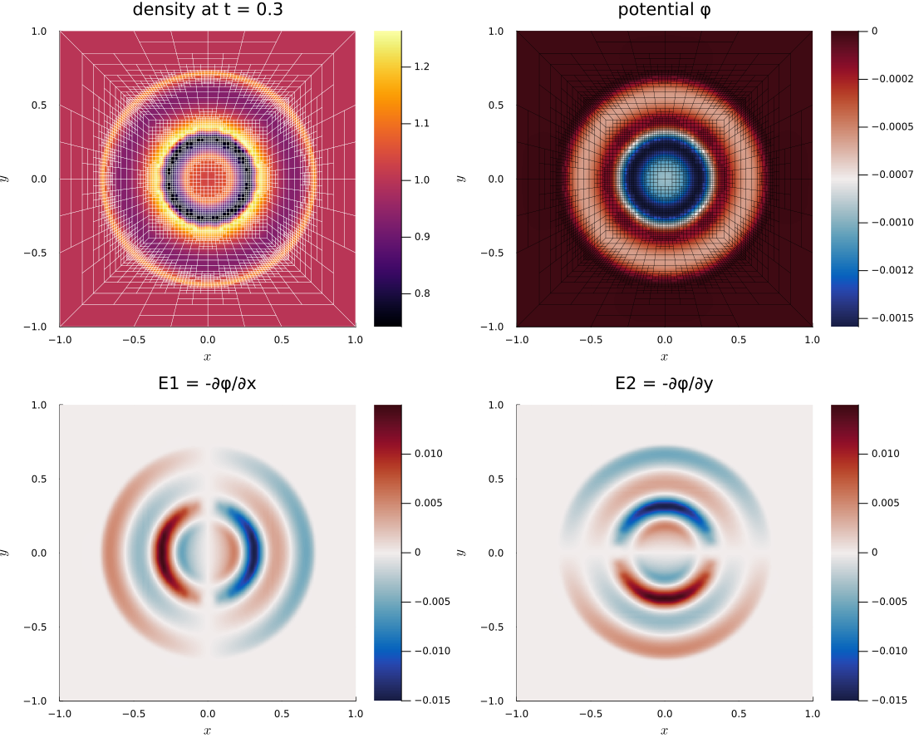

Trixi.jl–Gridap.jl bridge
The bridge of AeroTrixi.jl couples the discontinuous Galerkin (DG) solver of Trixi.jl with continuous finite elements of Gridap.jl on the same, adaptively refined P4estMesh. A typical use is a hyperbolic system that is coupled to an elliptic equation, for example the Euler equations with an electrostatic potential: in each time step (or in each Runge-Kutta stage), a source is taken from the DG solution, a finite element problem is solved with Gridap.jl, and the result is written back into the DG solution, where it enters the source terms of the flow.
Gridap.jl assembles the finite element problems from their weak form, so that other problems than the Poisson problem of the example (systems, other operators, other boundary conditions) can be set up with little effort. The bridge itself only provides the mesh, the node numbering with hanging-node constraints, the data transfer, and a callback for the time integration.
Current Scope and Limitations
The bridge currently covers:
- 2D,
P4estMeshwith adaptive refinement, DG with polynomial degree 2 and continuous Q2 elements on the same nodes; serial runs only. - Meshes with the full connectivity between trees, including corners.
- An elliptic part of the equations with a single scalar Q2 field.
- Linear elliptic problems with homogeneous Dirichlet conditions, whose linear form is affine in the sources taken from the DG solution.
- For the full order in time, a time integration method with
stage_limiter!(SSPRK and low-storage Runge-Kutta methods of OrdinaryDiffEq.jl); with other methods, the elliptic problem can only be solved once per time step (first order in time).
Overview: the flow of a run
The diagram follows a simulation from the setup through the rebuilds after mesh changes to the Runge-Kutta stages of a time step. Each lane is one code base, time runs downward, and an arrow means "calls or uses":
- OrdinaryDiffEq.jl (grey): the time integration, which calls the stage update of the bridge as
stage_limiter!on each stage; - Application (violet): what an example provides, i.e., the mesh (from an
.inpfile) and the equations with their fluxes, source terms, and elliptic part (fields, sources, weak forms, and how the solution is written into the DG state); the Euler-Poisson example serves as illustration; - Trixi.jl (blue): the DG solver, the right-hand side, and the mesh adaptation;
- Bridge tools (pink): the generic parts of the bridge in AeroTrixi.jl;
- p4est (amber): the forest, its connectivity and adaptation, and the node numbering
p4est_lnodes; - Gridap.jl (green): the model, the finite element spaces, assembly, and solution.

Foundations
Matching nodes: DG with polydeg = 2 and Q2 elements
The DG solution of Trixi.jl with polynomial degree 2 lives at the 3 × 3 Legendre-Gauss-Lobatto nodes of each element, which in reference coordinates are \{-1, 0, 1\}^2. These are exactly the nodes of the continuous Q2 Lagrange element on the same quadrilateral. Each DG element is therefore one Q2 element, and all transfers between the two discretizations work node by node, without interpolation or projection:
- DG → Q2: the value at a Q2 node is the average of the DG values of all elements that share the node. The values at hanging nodes are then set from the hanging-node constraints, so that the result is a continuous Q2 function.
- Q2 → DG: the Q2 value is injected at each DG node. Gradients are computed element by element with the derivative matrix and the metric terms of Trixi.jl; they are discontinuous across elements, as expected for the gradient of a continuous Q2 function.
Continuous node numbering from p4est_lnodes
p4est creates a continuous node numbering of degree 2 for the forest of the P4estMesh (p4est_lnodes_new with degree 2). P4estLnodesQ2 turns it into the data needed on both sides:
element_nodes: the 9 nodes of each element, in the lexicographic order of the DG nodes of Trixi.jl (ifastest), so that DG node(i, j)of elementeiselement_nodes[i + 3 * (j - 1), e];coordinatesof all nodes;- the hanging nodes with their constraints (see below); they are numbered after the
n_independentindependent nodes; - boundary labels: the boundary names of the
P4estMesh(as used by Trixi.jl for boundary conditions) are attached to the boundary nodes. Nodes on more than one named boundary (corners of the box) get their own entity with all names.
p4est_lnodes needs the full connectivity between the trees, including the corners. Meshes from .inp files are complete (p4est_connectivity_read_inp completes the connectivity). P4estMesh(trees_per_dimension; ...) of Trixi.jl does not contain the corner connectivity; use p4est_mesh_from_vertices, which completes the connectivity with p4est_connectivity_complete, or the test mesh p4est_mesh_five_trees of the box [-1, 1]^2 (a center square and four trapezoids, with bilinear trees).
Hanging nodes
The P4estMesh of Trixi.jl is 2:1 balanced, so a coarse face meets at most two fine faces. On a coarse face with the Q2 nodes a, m (midpoint), b, the fine faces carry the nodes a, q_1, m, q_2, b. The node at m is the coarse midpoint itself; the quarter points are hanging nodes with the constraint of the quadratic interpolation on the coarse face,
\[u(q_1) = \tfrac{3}{8} u(a) + \tfrac{3}{4} u(m) - \tfrac{1}{8} u(b).\]
With 2:1 balance, the masters of a hanging node are never hanging themselves, so the constraints are explicit. apply_hanging_constraints! sets the values of all hanging nodes from their masters.
Gridap.jl model and space
gridap_model creates a Gridap.jl UnstructuredDiscreteModel from the element corners, with face labels "interior", "boundary", and the boundary names of the mesh. (Gridap.jl would otherwise treat the faces at hanging nodes as boundary faces.)
gridap_q2_space creates the Q2 space with the node numbering of P4estLnodesQ2: an unconstrained space with all nodes as degrees of freedom, and the space FESpaceWithLinearConstraints that eliminates the hanging nodes with their constraints. Nodes with a boundary name in dirichlet_tags are Dirichlet nodes. Symmetric problems stay symmetric after the elimination; the matrix of the Poisson problem with Dirichlet conditions is symmetric positive definite and can be factorized with Cholesky.
Interface
| Function | Purpose |
|---|---|
p4est_mesh_from_vertices, p4est_mesh_five_trees | P4estMesh with full face and corner connectivity |
P4estLnodesQ2 | continuous Q2 node numbering, hanging nodes, boundary labels |
apply_hanging_constraints! | values at hanging nodes from their masters |
gridap_model, gridap_q2_space | Gridap.jl model and Q2 space (with constraints and Dirichlet nodes) |
gridap_q2_function, gridap_node_values | node values → Gridap.jl function and back |
transfer_dg_to_q2! | DG solution → node values (averaging, constraints) |
transfer_q2_to_dg!, q2_value, q2_gradient | node values → DG solution (injection, element-wise gradients) |
GridapCallback, gridap_stage_update | finite element solves during the time integration |
elliptic_fields, elliptic_sources, elliptic_forms, write_elliptic_solution, elliptic_spd, Q2Field | elliptic part of equations |
CompressibleEulerPoissonEquations2D, source_terms_euler_poisson | Euler equations with electrostatic potential |
The Gridap.jl parts are a package extension of AeroTrixi.jl, which is loaded together with Gridap.jl. Load Gridap.jl with import Gridap and import only the names you need, e.g., using Gridap: ∫, ∇, ⋅; with using Gridap, names such as solve clash with Trixi.jl and OrdinaryDiffEq.jl.
Elliptic part of the equations
Like fluxes and source terms, the elliptic problem belongs to the equations. Equations with an elliptic part implement, dispatched on their type:
elliptic_fields(equations): the unknowns and their spaces, e.g.,(phi = Q2Field(),);elliptic_sources(u, x, equations): the source fields at a DG node;elliptic_forms(equations, gridap): the weak forms(a, l), written for tuples of fields;write_elliptic_solution(u, q, x, equations): the new state at a DG node from the solution;- optionally
elliptic_spd(equations):truefor a symmetric positive definite matrix (Cholesky instead of LU).
The weak forms use Gridap.jl notation, but the equations do not depend on Gridap.jl: the bridge passes the Gridap.jl module as the argument gridap, and the forms take the operators from it. For the Euler-Poisson equations, all parts are in the file of the equations, src/equations/compressible_euler_poisson_2d.jl:
elliptic_fields(::CompressibleEulerPoissonEquations2D) = (phi = Q2Field(),)
elliptic_spd(::CompressibleEulerPoissonEquations2D) = true
elliptic_sources(u, x, equations::CompressibleEulerPoissonEquations2D) =
SVector(u[1] - equations.rho_0)
function elliptic_forms(::CompressibleEulerPoissonEquations2D, gridap)
∫, ∇, ⋅ = gridap.∫, gridap.∇, gridap.:⋅
a((φ,), (v,), dΩ) = ∫(∇(v) ⋅ ∇(φ)) * dΩ
l((v,), sources, dΩ) = ∫(v * sources[1]) * dΩ
return a, l
end
function write_elliptic_solution(u, q, x, equations::CompressibleEulerPoissonEquations2D)
∇φ = q2_gradient(q)
return with_electrostatic(euler_variables(u), SVector(q2_value(q), -∇φ[1], -∇φ[2]))
endWith this, GridapCallback(semi; dirichlet_tags) solves the elliptic part of the equations of semi (see below).
Since the forms are written for tuples of fields, a system has the same shape. For the Stokes problem with a velocity and a pressure, for example, the fields would be (velocity = Q2Field(components = 2), pressure = ...) and the bilinear form a((u, p), (v, q), dΩ) = ∫(∇(v) ⊙ ∇(u) - (∇ ⋅ v) * p + q * (∇ ⋅ u)) * dΩ. The bridge currently supports a single scalar Q2 field; vector-valued Q2 fields, a Q1 pressure space, and multi-field spaces are the next steps for such systems.
User functions of the transfers
The transfers take pointwise functions, similar to initial conditions and source terms in Trixi.jl (elliptic_sources and write_elliptic_solution are such functions):
source(u, x, equations)returns anSVectorof fields at a DG node, e.g.,SVector(u[1] - ρ0);transfer_dg_to_q2!writes them into a matrixn_fields × n_nodes.write(u, q, x, equations)returns the new state at a DG node;q2_value(q, k)andq2_gradient(q, k)give the Q2 fieldkand its gradient at this node.transfer_q2_to_dg!writes the state directly into the DG solution vector.
Assembly and solution
After each mesh change, the GridapCallback assembles the matrix of the bilinear form of elliptic_forms, with homogeneous Dirichlet conditions on the boundaries in dirichlet_tags, and factorizes it: with Cholesky if elliptic_spd is true, with LU otherwise. The linear form must be affine in the sources; then the load vector is b = b_0 + \sum_k B_k f_k for the source values f_k at the nodes, and the callback also assembles b_0 and the matrices B_k once per mesh (checked against a direct assembly with random sources). Each solve then only needs sparse matrix-vector products and the solve with the factorization.
Time integration: callback and stage updates
callback = GridapCallback(semi; dirichlet_tags = (:x_neg, :x_pos, :y_neg, :y_pos))solves the elliptic part of the equations of semi. On its own, the callback solves the problem at the start and after every interval time steps. The solution is then constant during the stages of a Runge-Kutta step, which limits the coupled time integration to first order in time.
For the full order, the problem is solved on each Runge-Kutta stage. The SSPRK and low-storage Runge-Kutta methods of OrdinaryDiffEq.jl call a stage_limiter! on each stage value before the right-hand side is evaluated, and on the solution at the end of each step; gridap_stage_update provides it:
stage_update = gridap_stage_update(callback)
sol = solve(ode, CarpenterKennedy2N54(; stage_limiter! = stage_update,
williamson_condition = false); ...)(With williamson_condition = true, the stage limiter is not called. In OrdinaryDiffEqCore.jl v4, the stage limiter can also be passed to solve as the keyword stage_limiter.) The callback then only acts at the start and after mesh changes, where it rebuilds the mesh data and updates the solution on the new mesh. Mesh changes are detected with the revision counter of p4est; in the CallbackSet, the GridapCallback must come after the AMRCallback.
The difference in accuracy, for the Euler-Poisson equations with coupling on a fixed mesh (error of the Euler variables against a reference with a much smaller time step):
| time steps | update per step | update per stage |
|---|---|---|
| 10 | 3.4e-4 | 1.6e-6 |
| 20 | 1.7e-4 | 1.0e-7 |
| 40 | 8.9e-5 | 6.9e-9 |
| 80 | 4.5e-5 | 5.8e-10 |
| order | 1 | 4 |
Example: Euler-Poisson blast wave
The Euler-Poisson equations CompressibleEulerPoissonEquations2D describe a charged gas, i.e., a single charged species in a uniform neutralizing background of density \rho_0, under its own electrostatic field:
\[\begin{aligned} \partial_t \rho + \nabla \cdot (\rho v) &= 0, \\ \partial_t (\rho v) + \nabla \cdot (\rho v \otimes v + p I) &= c \, \rho E, \\ \partial_t (\rho e) + \nabla \cdot ((\rho e + p) v) &= c \, \rho v \cdot E, \\ -\Delta \phi = \rho - \rho_0, \qquad E &= -\nabla \phi. \end{aligned}\]
The field accelerates the gas $c \rho E$ and does work on it $c \rho v \cdot E$ for $c > 0$, it pushes the gas from regions of excess density towards regions of deficit. With the charge-to-mass ratio $q/m$ of the species and the permittivity $\varepsilon_0$, the physical potential is $\phi_\mathrm{phys} = (q/m) / \varepsilon_0 \, \phi$, and the coupling constant is
\[c = \frac{(q/m)^2}{\varepsilon_0} = \frac{\omega_p^2}{\rho_0},\]
with the plasma frequency $\omega_p$ of the background. Small density perturbations oscillate with $\omega_p$. For $c = 300$ and $\rho_0 = 1$, the period is $2\pi / \omega_p \approx 0.36$. A negative coupling $c = -4 \pi G$ describes self-gravity instead (attraction instead of repulsion).
The example elixir_euler_poisson_blast_five_trees_amr.jl combines all parts:
CompressibleEulerPoissonEquations2Dwith the variables $(\rho, \rho v_1, \rho v_2, \rho e, \phi, E_1, E_2)$; the potential and the field have no flux in the DG discretization, they are only set by the bridge. The force of the field on the flow,source_terms_euler_poisson, is scaled bycoupling = 300in the example. The field repels density excess, and its force is then comparable to the pressure forces of the blast: compared with the uncoupled case, the shock is weaker, the rarefied core refills, and the potential and the field oscillate in rings.- A pressure blast (pressure 3 inside the radius 0.3, 1 outside, constant density) on the five-tree mesh of
[-1, 1]^2, DG withpolydeg = 2, shock capturing, and adaptive mesh refinement between the levels 1 and 5. - The Poisson problem
-\Delta\phi = \rho - \rho_0(the elliptic part of the equations, with the background densityrho_0) with\phi = 0on the boundary, solved on each Runge-Kutta stage, with the fieldE = -\nabla\phi.
The example needs, besides AeroTrixi.jl, the packages Trixi.jl, OrdinaryDiffEqLowStorageRK.jl, Gridap.jl, and Plots.jl (for the plots below). Install them once in a separate environment for runs, e.g., in the folder run/ of the clone of AeroTrixi.jl, which git ignores. Do not add them to the environment of the package itself (julia --project=. in the clone), since Pkg.add would change the Project.toml of AeroTrixi.jl. In run/, start julia --project=. and execute once
using Pkg
Pkg.develop(path = "..") # the clone of AeroTrixi.jl (for a released version: Pkg.add("AeroTrixi"))
Pkg.add(["Trixi", "OrdinaryDiffEqLowStorageRK", "Gridap", "Plots"])This takes a few minutes, mostly for precompilation. run/Project.toml and run/Manifest.toml then record the installed packages; on another machine with a copy of these two files, using Pkg; Pkg.instantiate() installs the same versions.
Later, start julia --project=. in run/ and run the example with
using Trixi, AeroTrixi
trixi_include(joinpath(AeroTrixi.examples_dir(), "p4est_2d_dgsem",
"elixir_euler_poisson_blast_five_trees_amr.jl"));(trixi_include returns the solution sol; the semicolon keeps the REPL from printing it) and plot the density with the mesh, the potential, and the field with Plots.jl:
using Plots
pd = PlotData2D(sol)
p1 = plot(pd["rho"], title = "density at t = $(sol.t[end])")
plot!(p1, getmesh(pd), linecolor = :white, linewidth = 0.3)
p2 = plot(pd["phi"], title = "potential φ", color = :balance)
plot!(p2, getmesh(pd), linecolor = :black, linewidth = 0.2)
p3 = plot(pd["E1"], title = "E1 = -∂φ/∂x", color = :balance)
p4 = plot(pd["E2"], title = "E2 = -∂φ/∂y", color = :balance)
plot(p1, p2, p3, p4, layout = (2, 2), size = (1100, 900))
Suggestion: Change coupling = 0 such that the potential follows the density without acting on the flow and you get the pure Euler result for density; at coupling = 1, the density changes by less than 1%.
Performance
All timings: Julia 1.13, one thread, after compilation (a short run first).
Example run. 373 time steps up to t = 0.3 (5846 cells at the end), mesh adaptation every 20 steps; 21.6 s in total:
| part | calls | time | per call |
|---|---|---|---|
| Trixi.jl right-hand side | 1870 | 11.0 s | 5.9 ms |
| Gridap.jl stage updates (DG → Q2, solve, Q2 → DG) | 1860 | 5.6 s | 3.0 ms |
| Gridap.jl rebuilds after mesh changes (incl. first) | 19 | 3.2 s | 169 ms |
| mesh adaptation (Trixi.jl) | 18 | 0.5 s | 30 ms |
A stage update costs about half of a right-hand side evaluation of Trixi.jl; its main part is the solve with the Cholesky factorization. A rebuild (node numbering, Gridap.jl model and space, assembly and factorization of the matrix, load matrices) costs about as much as one time step.
Costs per call in ms, on the five-tree mesh at the uniform levels 1 to 5 with one more refined ring (hanging nodes):
| cells | Q2 nodes | rebuild | stage update: DG → Q2 / load + solve / Q2 → DG | Trixi.jl rhs |
|---|---|---|---|---|
| 773 | 3197 | 29 | 0.51: 0.03 / 0.39 / 0.08 | 0.75 |
| 3029 | 12319 | 94 | 2.35: 0.20 / 1.82 / 0.34 | 2.95 |
| 11975 | 48301 | 433 | 8.3: 0.60 / 6.4 / 1.3 | 10.9 |
| 47777 | 191909 | 1830 | 61: 4.7 / 48 / 8.1 | 65 |
The transfers are a small part of a stage update. In a rebuild, the node numbering and the Gridap.jl model and space take less than 10%; most of the time is spent in the assembly and factorization of the matrix and in the load matrices. The load matrices pay off after 6–11 solves (1–2 time steps with stage updates), compared with assembling the load vector for each solve.
Adaptation interval and refinement. Since each mesh change also rebuilds the finite element data, the interval of the mesh adaptation matters, and so do the thresholds of the refinement. For the example (wall times of the whole run without the analysis and output callbacks; L1 error of the density at t = 0.3 against a coupled uniform run at the finest level 5 with 20480 cells, which takes 92.0 s):
| AMR interval | AMR thresholds | mean / max cells | time | rebuilds | L1 error |
|---|---|---|---|---|---|
| 20 | 0.06 / 0.2 | 2644 / 3248 | 12.7 s | 19 | 3.7e-2 |
| 10 | 0.015 / 0.05 | 3627 / 5240 | 20.0 s | 37 | 1.4e-2 |
| 10 | 0.005 / 0.015 | 4072 / 5855 | 22.3 s | 38 | 9.1e-3 |
| 20 | 0.005 / 0.015 | 4007 / 5696 | 19.9 s | 19 | 1.0e-2 |
| 5 | 0.002 / 0.006 | 4322 / 6161 | 32.3 s | 75 | 8.6e-3 |
| 10 | 0.002 / 0.006 | 4260 / 6077 | 23.7 s | 38 | 7.7e-3 |
| 20 | 0.002 / 0.006 | 4270 / 6038 | 20.8 s | 19 | 8.0e-3 |
| 40 | 0.002 / 0.006 | 3984 / 6710 | 16.6 s | 10 | 1.6e-2 |
| uniform level 4 | 5120 | 8.0 s | 2.9e-2 |
The upper threshold decides the accuracy: the middle threshold (0.002 or 0.005 with the upper threshold 0.015) and the middle level (3 or 4) change the error by less than 10%. Low thresholds refine a wide region around the shock and the waves of the field; then the mesh only needs to be adapted every 20 steps, while after 40 steps the waves leave the refined region and the error doubles. The example uses the thresholds 0.002 / 0.006 and the interval 20: compared with the uniform run at level 4, the error is 3.7 times smaller at 2.6 times the cost (the adaptive mesh needs the time step of level 5), and the run is 4.4 times faster than the uniform run at level 5. Note that the performance of the uniform case is misleading as more complicated geometries and problem setups quickly render uniform refinement infeasible.
Outlook
Beyond the limitations listed under "Scope and limitations" at the top, natural next steps are:
- systems such as the Stokes problem (vector-valued Q2 fields, a Q1 pressure space, and multi-field spaces), other boundary conditions, and nonlinear elliptic problems;
- local time stepping, so that coarse cells take larger time steps, coordinated with the stage updates of the elliptic problem;
- refinement indicators for the smooth waves of the field, in addition to the shock indicator, so that the waves are not refined to the finest level.